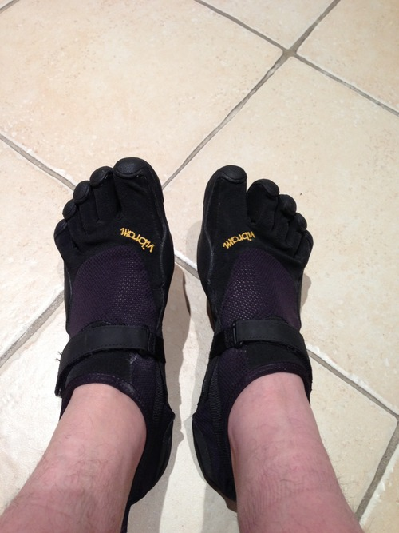

Sponsor me to run the London marathon (almost) barefoot
I will be running in this year’s London Marathon, and to be honest, I’ve left the fundraising quite late.
I am running to raise money for the NSPCC, which is a fantastic charity that does great work.
This is my first marathon, although I’ve run 2 half marathon’s previously. As if that wasn’t enough of a challenge, I’ll be running it barefoot…. sort of.
Instead of running in cushioned trainers, I will be running the marathon in minimalist footwear that does little more than stop my feet getting cut on sharp stones.
You can find out more about barefoot and minimalist running on Wikipedia: http://en.wikipedia.org/wiki/Barefoot_running
I am looking to reach a sponsorship goal of £2,000 so please sponsor me anything you can spare.
To sponsor me, please visit http://keef.me/barefoot-sponsor or you can text KEEF55 and an amount to 70070. For example, sending the following text:
KEEF55 £10 to 70070 would sponsor me for £10 and be much appreciated.